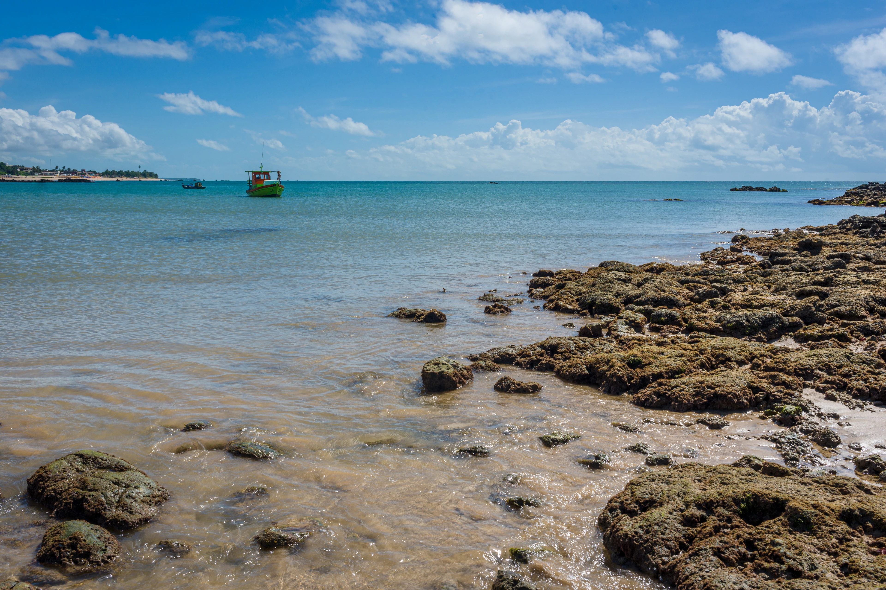
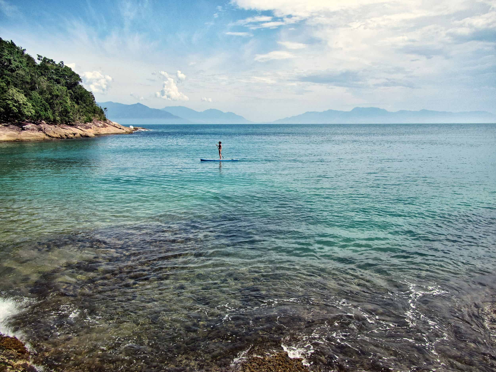
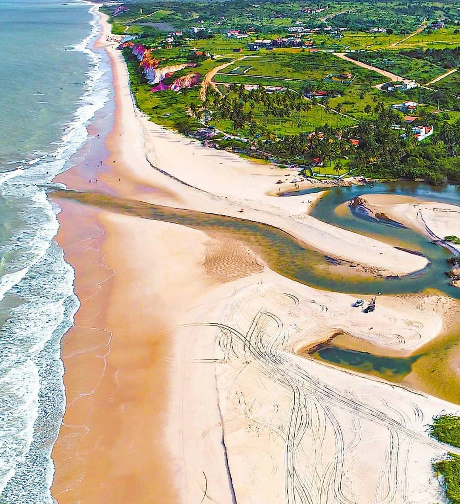

Praia de Jacumã
Pipa, uma praia paradisíaca do litoral sul do Rio Grande do Norte

Praia de Carapibus
Pipa, uma praia paradisíaca do litoral sul do Rio Grande do Norte

Praia do Amor
Pipa, uma praia paradisíaca do litoral sul do Rio Grande do Norte

Praia de Tabatinga
Pipa, uma praia paradisíaca do litoral sul do Rio Grande do Norte

Coqueirinho
Pipa, uma praia paradisíaca do litoral sul do Rio Grande do Norte

Praia de Tambaba
Pipa, uma praia paradisíaca do litoral sul do Rio Grande do Norte

Barra do Graú
Pipa, uma praia paradisíaca do litoral sul do Rio Grande do Norte